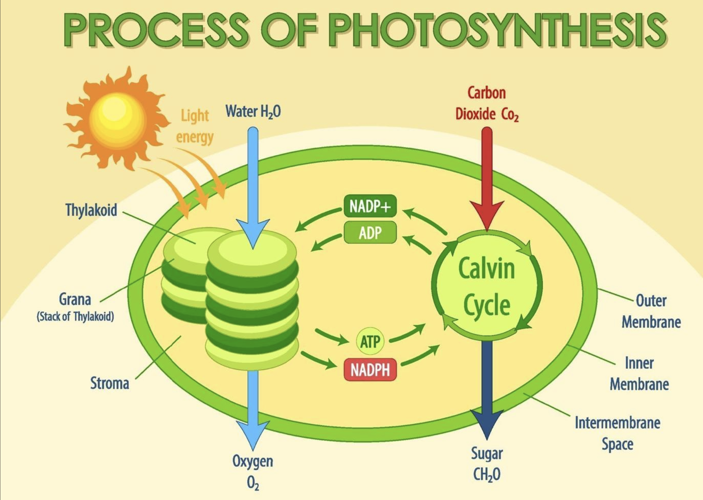

How does Light affect plant's growth?
home
intro
information
procedure
result
what?
final
Background information
Plants need to go through a process called photosynthesis in order to survive.
The scientific equation for photosynthesis is 6CO2 + 6H2O + light energy → C6H12O6 + 6O2
This tells us carbon dioxide, water, and light are essential for plant growth
Light is composed of different spectra, which all have different wavelengths.
This is explained below

Light dependent reactions
Light dependent reactions - in the thylakoid
Chlorophyll absorbs light energy
Moves through proteins, converting ADP (Adenosine Diphosphate) into ATP
Oxygen is emitted and released - ATP and NADPH are used in the Calvin cycle
The Calvin cycle
The Calvin Cycle: CO2 enters the plant through the stomata and into the stroma
The stroma is the fluid-filled space inside the chloroplast
Reacts with a chemical called RuBP (carbon fixation)
Splits into 2 molecules of 3-phosphoglycerate (3-PGA)
Uses ATP and NADPH from light dependent reactions
Turned into G3P and rearranged into glucose (C6H12O6)
to TOP